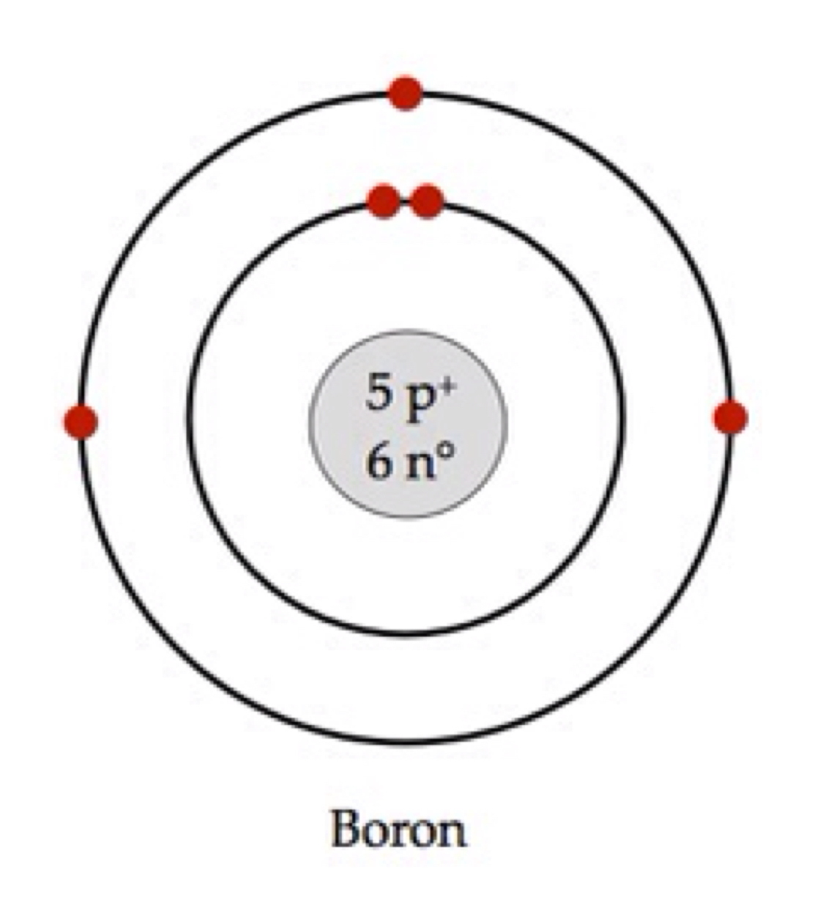

Assignment 3: Ch. 4 Review questions, 54, 55, 60, 64, & 71 and Standard test prep- questions 1- 9
54. Isotopes are atoms of an element that vary by the number of neutrons. These have different masses and some are unstable (radioactive).
55. To calculate atomic mass you need the mass (mass number) of each isotope and their abundances. The equation is written below:
|
Calculating Average Atomic Mass |
|
Atomic Mass = S (Ai * mi)n Ai = isotopes abundance mi = isotopes mass n = number of isotopes to averaged. |
60. In a boron-11 (11B), there are 5 protons (atomic number), 6 neutrons (mass number - atomic number) and 5 electrons (atoms are neutral, ions are charged). The protons and neutrons are inside the nucleus and the electrons are outside the nucleus.

64. atomic mass = 207 amu
= (204 * 0.014) + (206 * 0.241) + (207 * 0.221) + (208 * 0.524)
71. Chemical activity is dependent upon the electrons, specially where they are and how many are there.
Standardized Test Prep
1. C; atoms are the smallest unit of matter that retains the properties of the matter. Dalton's first postulate
2. B; electrons are small and negatively charged but they are NOT in the nucleus.
3. B; Atoms of both thallium isotopes have 81 protons because the atomic number of thallium is 81
4. C; 3216S has 16 protons and 16 neutrons.
5. 9; three 42Ca have a mass of 126 amu (42 * 3). One 14N has a mass of 14 amu, s 126 amu/14 amu = 9.
6. false, true; aluminum has 13 protons. 27Al has a mass number of 27
7. true, false; each isotope has a certain mass, not really an atomic mass. Atoms of an element have the SAME number of protons
8. true, true; electrons are negative so they are repelled by negative charges.
9. false, true; isotopes can have more, less or equal number of neutrons as protons. Mass number is protons + neutrons, so it is higher than the atomic number (protons)